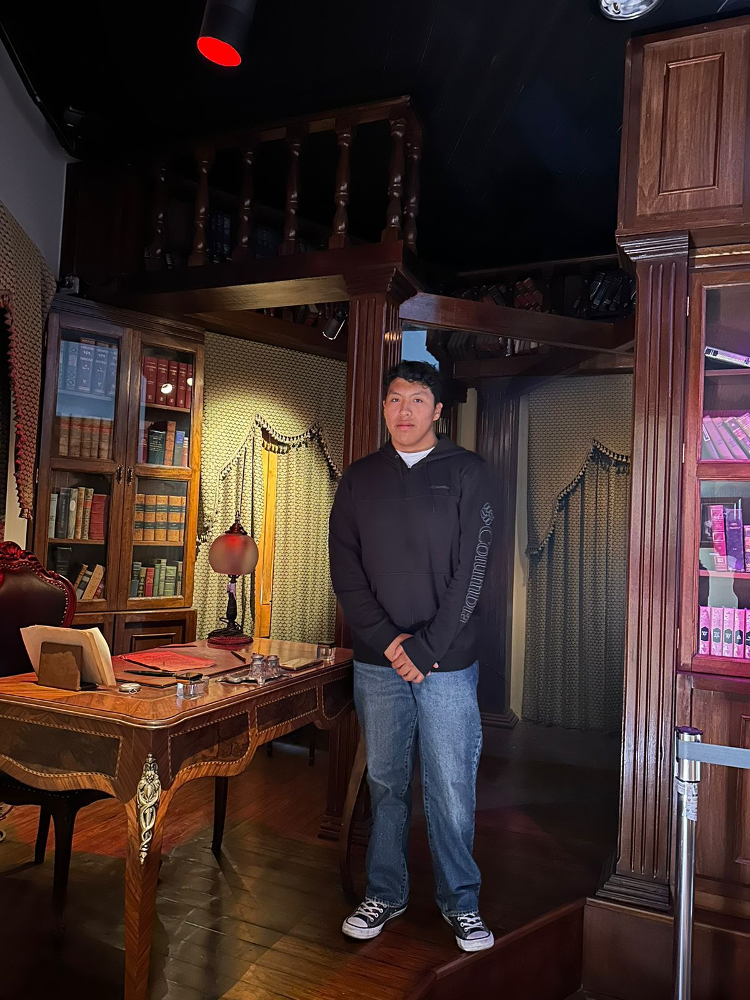

Estudiante de Administración de Negocios · Universidad Católica San Pablo (UCSP) · Arequipa, Perú
Hola, soy Anyelo Do Santos Blanco Hancco. Estudio Administración de Negocios en la Universidad Católica San Pablo. Me interesa construir proyectos que combinen finanzas y tecnología con un enfoque práctico. Disfruto convertir ideas en acciones: ya sea en clase, en trabajos aplicados o en iniciativas con impacto real.
Email: anyelodosantosbh@gmail.com
LinkedIn: Perfil profesional
Ciudad: Arequipa, Perú